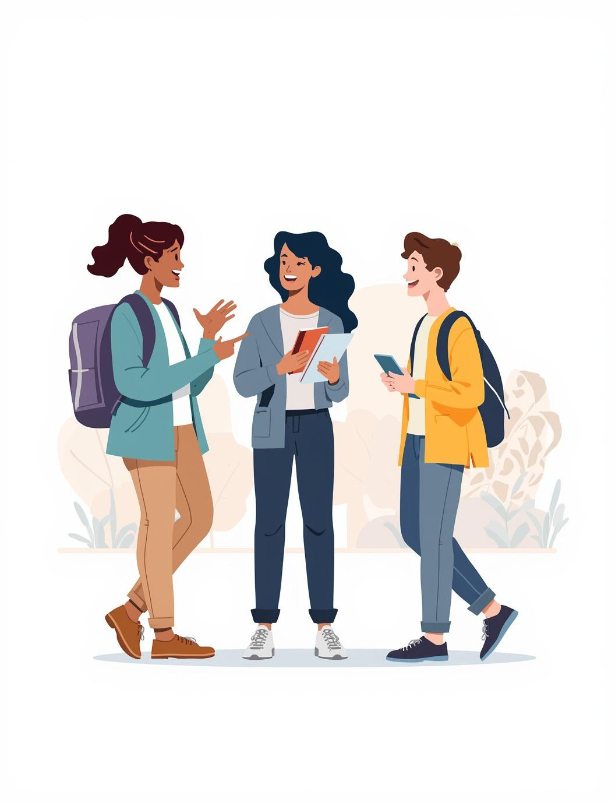
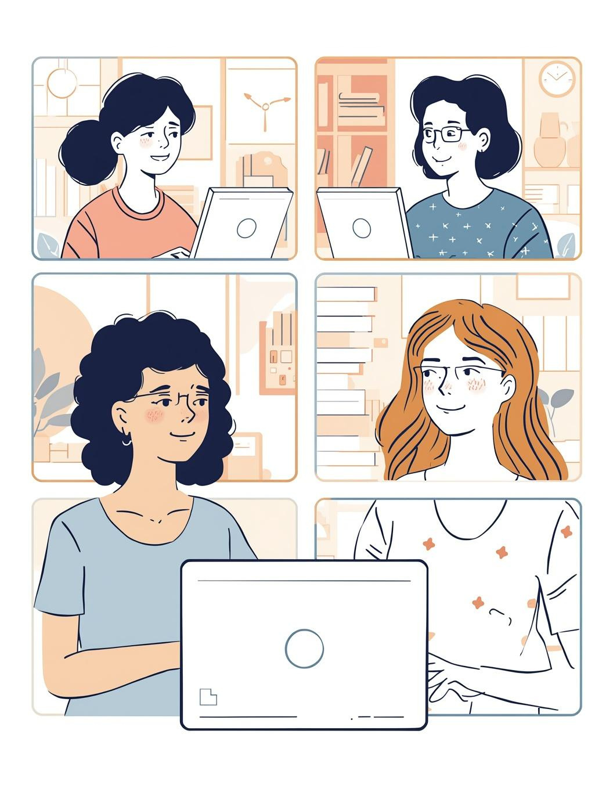
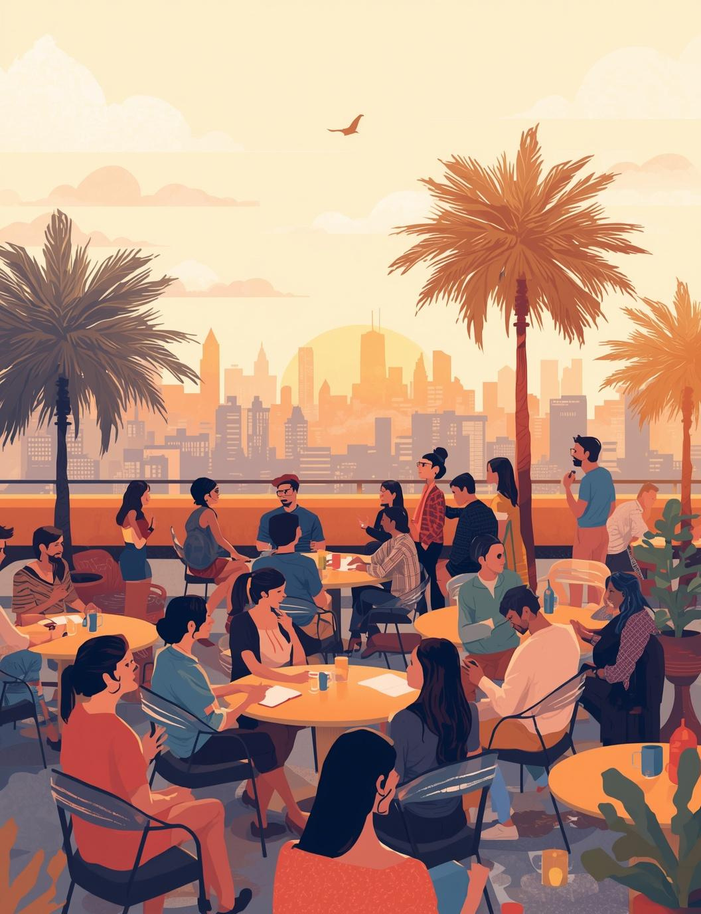
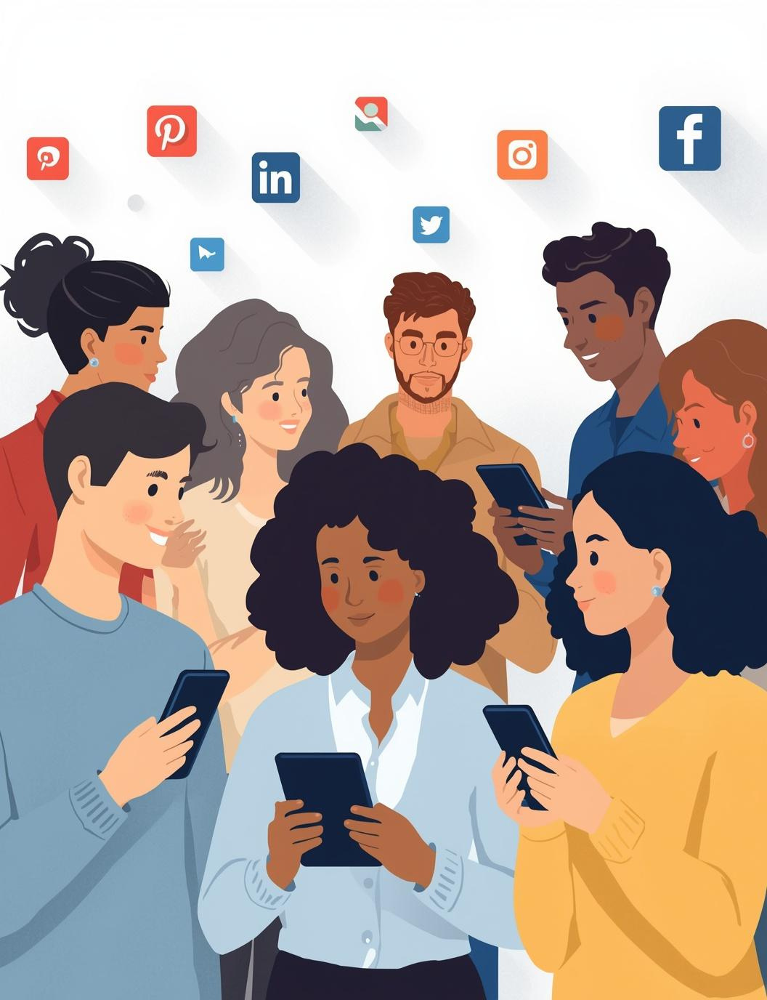
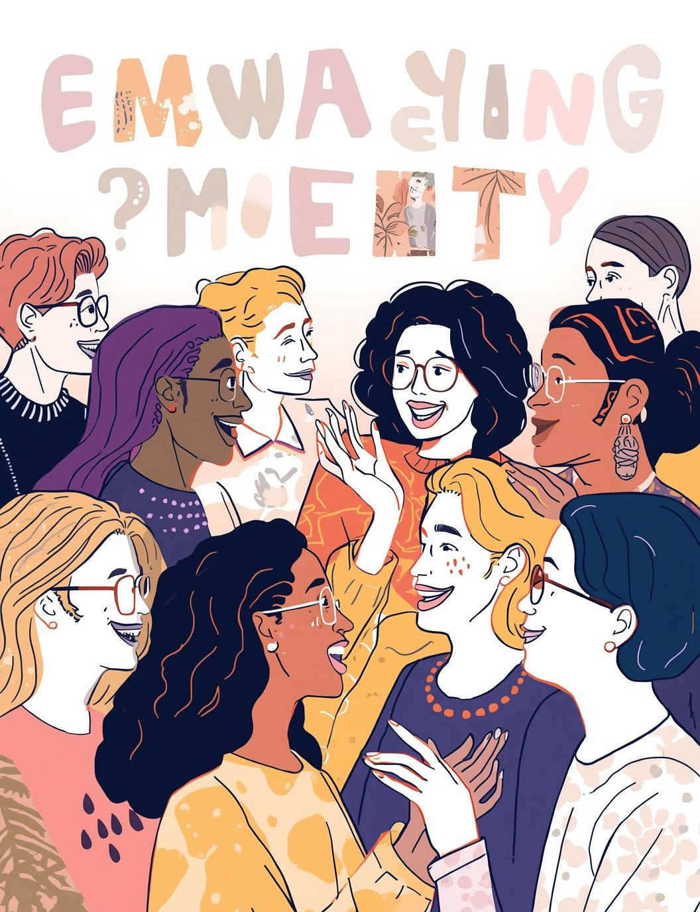

Exploring ways to practise English outside the classroom through real-life interactions — online, in person, and beyond.

The goal of our project is to explore effective ways to practise English outside the classroom, emphasising the importance of real-life interactions for language growth and confidence.

OnlineJoining an online English lesson via video call offers a convenient way to practise speaking with new people, despite the occasional feeling of distance in the virtual environment.

In-PersonAt the Moxy Hotel rooftop, we experienced an incredible atmosphere filled with engaging discussions, where people of all ages practised their English while forming genuine connections.

SocialTikTok and Instagram offer an informal way to practise English, connecting learners with diverse communities — though they often lack meaningful face-to-face interactions.
— Unknown

Comparing interaction methods for learning English
Engaging face-to-face offers immediate feedback and builds stronger connections. Real conversations foster confidence, allowing learners to practise English in a supportive environment and develop meaningful relationships.
While online tools provide accessibility and convenience, they often lack the warmth of personal interaction. Practising English through video calls may feel more distant, limiting authentic connection.
View the original presentation
View Canva Presentation →